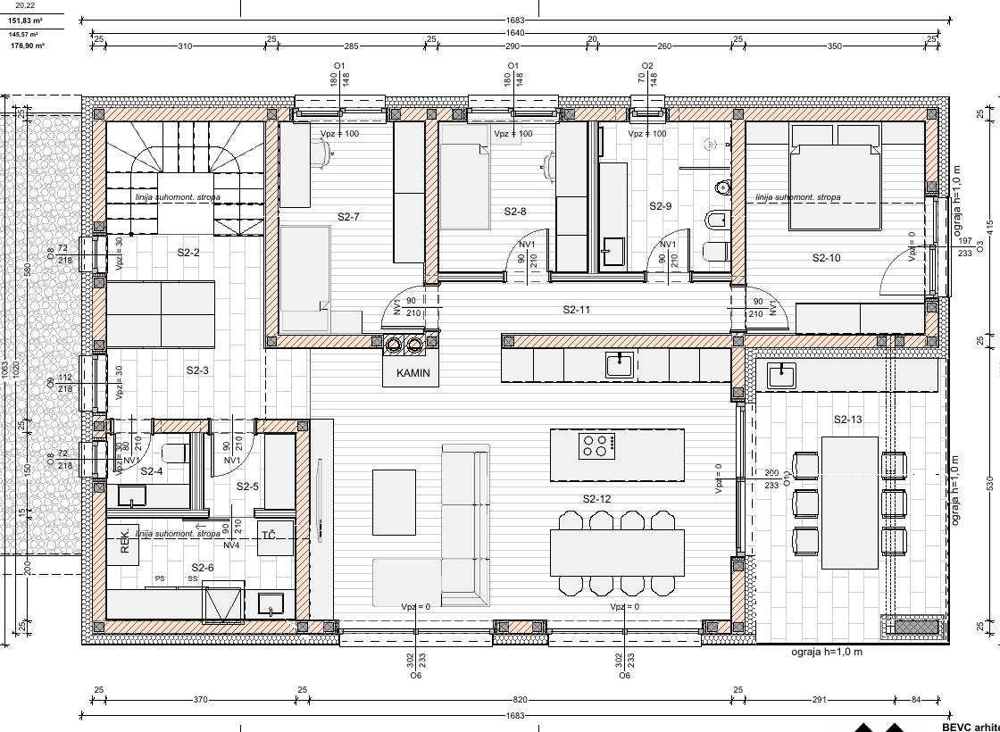

Dvostanovanjska hiša · DGD 306/2025 · mansarda
Stanovanje S2, sobo za sobo.
Vse za stanovanje S2 na enem mestu: 3D model za ogled in izbiro barv, načrti po strokah z oštevilčenimi seznami za izvajalce, kaj mora biti izbrano pred inštalacijami, kje kupiti in koliko stane. Model je narejen po merah iz tlorisa (DGD 306/2025, list 3).
Kdo si? Klikni in odpre se tvoj del
različica 136 – hitrejši prikaz (večer, realistično, celoten pregled)

Za projektanta in izvajalce
Načrti inštalacij
Vse, kar sva dodala v model, narisano na originalnem tlorisu mansarde (list 3). Izberi stroko (električar, vodovodar, strojnik …): točke se oštevilčijo, pod načrtom pa je seznam s prostorom, opisom in višino od tal – to je delovni seznam za izvajalca. Klik na načrt ga poveča čez cel zaslon (+/−, vlečenje), z gumbom »Prenesi PNG« pa ga shraniš v visoki ločljivosti za projektanta. Položaji so predlog za PZI, točne mere določi projektant.
Pred začetkom inštalacij
Kaj mora biti izbrano in kupljeno, preden začnejo električar, vodovodar in strojnik
Te stvari določajo, kje in kako gredo cevi in kabli. Če niso izbrane prej, se kasneje kleše, prestavlja ali kupuje drugo. Model ali vsaj natančne mere morajo biti znani pred PZI, kupljeno pa pred ometom in estrihom.
Odločitve in načrti
- Kuhinjski načrt potrjen (DanKüchen): položaj korita, BORA plošče 400 V, pečice, pomivalnega stroja v otoku, hladilnika z vodo, vtičnic nad pultom in v otoku.
- KNX in integrator izbran: projekt pametne hiše, seznam stikal, aktorjev in termostatov.
- Debelina tal (estrih + talno ogrevanje + ploščice) – za višino talne doze, kanalete in pragov.
- Kopalnica in WC: izbrani umivalniki in omarice (višina odtokov), tuš-WC model, kanaleta, armatura.
- Akvarij: velikost in teža (statika!), mesto tehnike v shrambi.
- TV, soundbar, Xbox: velikost TV-ja in višina – za vtičnice, UTP in prazno cev na TV steni.
Električar (pred ometom)
- Globoke doze 60 mm za vsa stikala in vtičnice, doze za LED napajalnike (dostopne), zaprta doza z uvodnico pod sedežno.
- Kabli: NYM 3×1,5 (luči), 3×2,5 (vtičnice, 16 A tokokrogi), 5×2,5 (BORA 400 V), KNX kabel (zelen, 2×2×0,8), Cat6A za vse UTP, kabli za motorje senčil in strešno okno.
- Cevi (Ø 20/25) za vse kable in prazne cevi Ø 40 mm: TV stena, delovno mesto, otroški mizi, terasa, optika od vhoda S2-1 do omarice.
- Razdelilnik (dovolj velik za KNX aktorje in FID), omrežna omarica 15U v utility (mesto + 2 vtičnici).
- Dovodi: TČ, zunanja enota TČ in klime, rekuperacija, klima na podstrešju, kamin (regulacija), tuš-WC ×2, grelec brisač, LED ogledala, video zvonec, kamere.
Vodovodar (pred ometom in estrihom)
- Podometna WC nosilca ×2 (npr. Geberit Duofix) s priključkom 230 V za tuš-WC.
- Podometno telo termostatske armature z 2 izhodoma (dežna + ročna prha) in dovod za dežno prho v strop.
- Linijska kanaleta s sitom za lase + hidroizolacija (tuš do stropa, ostalo 15 cm).
- Cevi za vodo (alupex/PEX), odtoki Ø 50 in Ø 110, podometni sifon za pralni stroj, odvodi kondenza (rekuperacija, klima, TČ).
- Voda in odtok do pomivalnega stroja v otoku skozi tla (naklon 2 %), priključek za hladilnik, voda + odtok za akvarij, zunanje korito in pipa na terasi z zapornima ventiloma znotraj.
Strojnik in ostalo (pred stropom in estrihom)
- Toplotna črpalka (model – določa hidravliko), razdelilnik talnega ogrevanja s pogoni, cevi talnega ogrevanja.
- Rekuperacija: enota, 2 razdelilni škatli, kanali Ø 75 in Ø 160, 11 stropnih ventilov, 2 fasadni rešetki – kanali gredo nad strop pred montažo stropa.
- Kanalska klima: notranja enota, kanali in rešetke, cevi do zunanje enote (skozi zid, ne po fasadi).
- Kamin: vložek (model), dimnik, dovod zunanjega zraka v tleh ali steni.
- Okna, PSK terasna vrata in kasete senčil – kasete se vgradijo pred fasado, motorji potrebujejo kabel.
- Notranja vrata: mere podbojev (kopalnica vlagoodporna).
Nakupovalni seznami
Kaj kupiti in kje – po trgovinah
Kratki seznami po tem, kam greš. »Poišči« odpre iskanje izdelka, imena trgovin vodijo na njihovo spletno stran. Kljukice si stran zapomni na tej napravi. Cene in zaloge preveri pri trgovini.
Izvajalci – ponudba z montažo (ne kupuješ sam)
Pokliči in zahtevaj ponudbo. Pokaži jim načrt njihove stroke s te strani.
Kuhinjski studio
Vse za kuhinjo naenkrat, BORA pogosto ceneje v paketu s kuhinjo.
Trgovina z elektroniko in belo tehniko
Primerjaj cene, pogosto so akcije.
- — Poišči · Big Bang · Harvey Norman · Mimovrste
- — Poišči · Big Bang · Harvey Norman
- — Poišči · Big Bang · Harvey Norman · Mimovrste
- — Poišči · Big Bang · Harvey Norman · Mimovrste
- — Poišči · Big Bang · Mimovrste
- — Poišči · Big Bang · Harvey Norman · Mimovrste
- — Poišči · Big Bang · Harvey Norman · Mimovrste
- — Poišči · Big Bang · Mimovrste
- — Poišči · Mimovrste
Pohištvo
Pri sedežni in postelji vprašaj za noge 12 cm (robotski sesalnik).
Keramika in kopalnica
Vzemi vzorce domov in jih poglej zvečer.
Pametna hiša in omrežje (lahko kupiš sam)
Kable in doze mora električar položiti že med gradnjo.
Nakupovalni seznam
Kje kupiti in kdaj
Vse, kar je v modelu, po vrstnem redu odločanja. Stvari pod »Pred gradnjo« morajo biti izbrane pred PZI in pred estrihom, ker vplivajo na napeljave. Trgovine so primeri večjih prodajaln v Sloveniji. Cene in zaloge preveri sam, pri vgradni tehniki pa vedno vzemi ponudbo z montažo.
Podrobno: tabela po vrstnem redu gradnje
| Kdaj | Kaj | Znamke | Kje / prek koga |
|---|---|---|---|
| Pred gradnjo / PZI | Toplotna črpalka, talno ogrevanje | Daikin, Mitsubishi, Panasonic, Viessmann, Vaillant | Prek monterja strojnih inštalacij (ponudba z montažo). Pred nakupom preveri razpis Eko sklada. |
| Pred gradnjo / PZI | Rekuperacija (centralna, ~300–350 m³/h) | Zehnder ComfoAir Q350, Brink Flair 325, Vallox | Prek monterja prezračevanja, z izračunom pretokov in zvezdastim razvodom. |
| Pred gradnjo / PZI | Kanalska klima | Daikin, Mitsubishi Electric | Prek monterja klime, usklajeno s TČ. |
| Pred gradnjo / PZI | Pametna hiša KNX (tipke, aktorji, termostati) | Gira, Jung, ABB, MDT, Schneider | Prek KNX integratorja (seznam partnerjev na knx.org) – projektira in programira. |
| Pred gradnjo / PZI | Zunanje alu žaluzije z motorjem | Warema, Schenker, Somfy motorji | Prek lokalnega izdelovalca/monterja senčil – kasete se vgradijo v fasado med gradnjo. |
| Pred gradnjo / PZI | Kamin (vložek na drva, akumulacijski) | Spartherm, Attika, Brunner, Schmid | Prek prodajalca kaminov / pečarja, z dovodom zunanjega zraka in dimnikom. |
| Pred gradnjo / PZI | Podometni nosilci, tuš-WC, kanaleta, armature | Geberit (AquaClean, CleanLine), TECE, Hansgrohe, Grohe | Kopalniški saloni (npr. Kolpa), Bauhaus, Merkur – vodovodar mora imeti mere pred ometom. |
| Pred gradnjo / PZI | Notranja vrata (vlagoodporna za kopalnico), PSK terasna vrata | Proizvajalci oken in vrat | Okna/PSK pri izvajalcu stavbnega pohištva, notranja vrata v salonih vrat. |
| Med gradnjo | Ploščice (keramika v videzu hrasta, travertin) | Marazzi, Atlas Concorde, Florim, Porcelanosa | Saloni keramike, Bauhaus, Merkur – vzemi vzorec domov. |
| Med gradnjo | Omrežje (omarica 15U, PoE stikalo, dostopne točke, Cat6A) | Ubiquiti UniFi, TP-Link Omada | Mimovrste, Big Bang, spletne trgovine z mrežno opremo; kable in omarico montira električar. |
| Kuhinja | Kuhinja po meri (oreh / Silbermond, mat, črn pult) | DanKüchen | DanKüchen Trebnje, Lesnina – pokaži razporeditev otoka z modela. |
| Kuhinja | BORA X Pure Max, Oven Steam, Dish | BORA | Samo prek pooblaščenih prodajalcev kuhinj (seznam na bora.com → Prodajalci); pogosto v paketu s kuhinjo. |
| Kuhinja | Hladilnik LG GSXV90MCDE, Philips Airfryer 5000, kavni aparat | LG, Philips | Big Bang, Harvey Norman, Mimovrste – primerjaj cene in akcije. |
| Kuhinja | Dvoconska vinska vitrina | Klarstein | Spletna trgovina Klarstein ali Mimovrste – preveri mere za otok. |
| Utility | Pralni in sušilni stroj | Miele | Big Bang, Harvey Norman, Miele prodajni center. |
| Dnevni | Kotna sedežna z vgrajenim modulom, na nogah 12 cm | Wersal, Koinor, Himolla, Bretz | Harvey Norman, Rutar, Lesnina – vprašaj za noge in USB/230 V modul. |
| Dnevni | TV Philips 65OLED910, JBL soundbar + sub, Xbox | Philips, JBL, Microsoft | Big Bang, Harvey Norman, Mimovrste. |
| Dnevni | Morski akvarij (bazen, sump, LED z UV, krmilnik) | Red Sea, Waterbox, Neptune Apex / GHL | Specializirana trgovina z morsko akvaristiko (SI ali DE/AT spletno) – svetovanje je tu ključno. |
| Luči | Philips Hue (spoti, LED trakovi, Bridge Pro), stoječe in viseče luči | Philips Hue | Big Bang, Mimovrste, spletna trgovina Hue; dekorativne luči v Lesnini, Rutarju, IKEA. |
| Pohištvo | Omare z drsnimi vrati po meri, postelje, komode, otroške mize | Mizar po meri, Lesnina, Rutar, IKEA | Omare po meri pri mizarju (mat furnir), ostalo v pohištvenih trgovinah. |
| Ostalo | Robotski sesalnik s postajo, video zvonec, kamere | iRobot (Roomba Combo), Ubiquiti / Ring | Big Bang, Mimovrste, Harvey Norman. |
| Ostalo | Home Assistant (aplikacija in avtomatizacije) | Home Assistant Green ali mini PC | Uradna spletna trgovina / mrežni prodajalci; nastavi integrator ali sam. |
Pametna hiša – nakupovalni seznam
Kaj vse nabaviti, da pametna hiša deluje
Količine so iz modela (17 mest stikal, 11 senčil, 9 zank talnega ogrevanja …). Vse v steni in razdelilniku (KNX) dobavi in sprogramira KNX integrator. Hue, Home Assistant in omrežje lahko kupiš sam. Pomembno: kabli in doze morajo biti v steni že med gradnjo, naprave pa se lahko kupijo pozneje.
Podrobno: vse komponente s količinami
| Skupina | Kaj | Količina | Za kaj | Znamke |
|---|---|---|---|---|
| Srce sistema | KNX napajalnik 640 mA + IP vmesnik / router | 1 + 1 | napaja vodilo, poveže KNX z omrežjem in Home Assistantom | Gira, MDT, ABB |
| Srce sistema | Home Assistant strežnik: tvoj Synology (Home Assistant OS v virtualki) ali Home Assistant Green; UPS | 1 | ena aplikacija za vse: KNX, Hue, TČ, klima, kamere, robot, BORA, LG | Home Assistant |
| Srce sistema | Philips Hue Bridge Pro | 1 | vse luči Hue (~70 točk), scene, Ambilight sync | Philips Hue |
| Tipke in senzorji | KNX tipke (stikala) s 1–4 tipkami | 17 mest, ~47 tipk | luči, scene, senčila; vsaka tipka je programabilna | Gira, Jung, MDT |
| Tipke in senzorji | Sobni termostati / temperaturni senzorji KNX | 3 + glavna enota | temperatura po sobah, krmili talno ogrevanje in klimo | Gira, MDT, Theben |
| Tipke in senzorji | Senzorji gibanja / prisotnosti | 6 | hodnik, predprostor, stopnice, shramba, WC, spalnica (nočna luč) | Theben, Steinel, MDT |
| Tipke in senzorji | Senzor CO₂ (otroški sobi) in vlage (kopalnica) | 2 + 1 | povečajo pretok rekuperacije | MDT, Theben |
| Tipke in senzorji | Vremenska postaja (veter, dež, sonce, temperatura) | 1 | senčila ob vetru gor, poleti ob soncu dol, strešno okno ob dežju zapre | Elsner, MDT |
| Tipke in senzorji | Kontakt na terasnih vratih in strešnem oknu | 2 | senčilo se ne spusti pri odprtih vratih, opozorilo »okno odprto« | — |
| Tipke in senzorji | Senzorji puščanja vode | 5 | pod koritom, pomivalnim strojem, pralnim strojem, akvarijem, hladilnikom | Zigbee (prek Hue/HA) ali KNX |
| Tipke in senzorji | Povezani javljalniki dima + CO | 2 + 1 | hodnik, dnevni, CO pri kaminu – alarm na telefon | Ei Electronics, Hekatron |
| Aktorji (v razdelilniku) | Aktor za senčila | 12 kanalov | 11 zunanjih žaluzij + rolo strešnega okna | MDT, Gira, ABB |
| Aktorji (v razdelilniku) | Aktor za talno ogrevanje (ventilski pogoni 230 V) | 8–10 kanalov | vsaka soba svoja zanka in temperatura | MDT, Theben |
| Aktorji (v razdelilniku) | Stikalni aktor | 8–12 kanalov | vtičnice za božično jelko, grelec brisač, LED napajalniki, terasa, akvarij v sili | MDT, Gira |
| Povezave z napravami | Vmesnik TČ in rekuperacije (Modbus ali KNX modul proizvajalca) | 1–2 | temperatura, režimi, filtri, poraba v isti aplikaciji | po proizvajalcu TČ/REK |
| Povezave z napravami | Vmesnik klime (KNX/Modbus, npr. Intesis) | 1 | klima po conah v isti aplikaciji in termostatih | Intesis, Daikin, Mitsubishi |
| Povezave z napravami | Wi-Fi naprave brez dodatne opreme | — | LG ThinQ, BORA One, Miele@home, Roomba, Philips TV, Xbox – povežejo se v Home Assistant | — |
| Omrežje | Router s požarnim zidom in VLAN-i, PoE stikalo 24×, 4 dostopne točke, patch panel 48, omarica 15U, UPS | 1 kpl | stabilno omrežje, IoT naprave ločene od računalnikov | Ubiquiti UniFi, TP-Link Omada |
| Varnost | Video zvonec + 2 kameri (PoE) | 1 + 2 | vhod, terasa, nadstrešek; posnetki ostanejo doma | Ubiquiti, Reolink |
| Cela hiša na tablici | Stenska tablica 10" v hodniku namesto glavne enote (napajanje PoE ali USB-C v steni) | 1 | tloris stanovanja: luči, senčila, temperature, kamere, kdo je doma – vse z enim dotikom | iPad / Android tablica + nosilec v steni |
| Cela hiša na tablici | Aplikacija Home Assistant na telefonih in tablicah | — | ista nadzorna plošča doma in na poti (varen dostop prek Home Assistant Cloud ali VPN) | Home Assistant |
Cela hiša na tablici
- Strežnik na tvojem Synologyju: Home Assistant lahko teče na Synology NAS v Virtual Machine Manager kot Home Assistant OS (priporočeno, ker ima tako vse dodatke in varnostne kopije) – potrebuješ model, ki podpira virtualizacijo (serija Plus / x86 procesor) in vsaj 2–4 GB prostega RAM-a. Synology gre v omrežno omarico 15U v utility, na UPS. Če je NAS star ali ga pogosto ponovno zaganjaš, je boljši samostojen Home Assistant Green (~100 €), da pametna hiša ni odvisna od NAS-a. Na Synology pa lahko gredo posnetki kamer in varnostne kopije Home Assistanta.
- Stenska tablica v hodniku (namesto majhne glavne enote) kaže tloris stanovanja: tapneš sobo in prižgeš luči, spustiš rolete, nastaviš temperaturo, vidiš kamero pri vhodu, ali je kje odprto okno in ali pušča voda. Napajanje je iz stene (PoE ali USB-C), zato ni kabla.
- Apple Home (Siri) ali Alexa: oboje deluje. Home Assistant je »možgani«, ki naprave poda naprej: v Apple Home prek brezplačne povezave HomeKit Bridge (lokalno, brez oblaka), v Alexo prek Home Assistant Cloud (~7 €/mesec) ali brezplačno z ročno nastavitvijo. Hue deluje z obema tudi neposredno. Izberi enega: če imata iPhone, je bolj naravna Apple Home s HomePod mini (zvočnik in središče doma; Apple TV ali HomePod je obvezen za avtomatizacije in dostop od zunaj). Alexa z Echo zvočniki je cenejša in ima več podprtih naprav. Pozor: Siri in Alexa ne razumeta slovensko – ukazi so v angleščini (»Hey Siri, turn on the living room lights«). Home Assistant ima tudi lasten glasovni pomočnik Assist, ki deluje lokalno in lahko razume slovenske ukaze (podpora je delna, zato jo preizkusi).
- Isto na telefonu in tvoji tablici v aplikaciji Home Assistant – doma in na poti.
- 3D model in načrti (ta stran) so na zanmeke.com/hisa z geslom – na tablici dodaj ikono na začetni zaslon.
Koliko vtičnic
| Oznaka | Prostor | m² | Vtič. | Kje |
|---|---|---|---|---|
| Skupaj | 151,83 |
Fiksni priključki
Opombe
- Štetje je predlog za udobno stanovanje (približno raven „standard plus“), ne minimum po predpisu.
- V PDF-ju ni načrta električnih inštalacij. Končno število in tokokroge določi projektant elektroinštalacij (PZI), npr. ločene tokokroge za kuhinjo, pralni in sušilni stroj ter TČ.
- Kuhinja: vtičnice nad pultom na višini ~110 cm, v kopalnici najmanj 60 cm od tuša in na FID zaščiti.
- BORA X Pure Max je na otoku, zato nad otokom ni nape in pogled proti terasi ostane odprt. BORA za nizkoenergijske hiše priporoča recirkulacijo (PUXUM, mat izvedba PUXUMR). Filter zdrži 150 ur in se menja od zgoraj. Plošča sega 199 mm pod pult, zato je zgornji predal otoka plitvejši.
- BORA Dish ima program, ki traja 10 minut, in sprejme 7 pogrinjkov. Lahko se vgradi dvignjeno, tik pod pultom, da se ni treba sklanjati.
- Razporeditev v otoku (kuhinjska stran, od plošče proti jedilnici): pod ploščo BORA široki predali za lonce, ponve in začimbe · pomivalni stroj točno nasproti korita · ob njem zgornji plitvi predal za jedilni pribor (vilice, žlice, noži v vložku iz oreha), pod njim globoka predala za krožnike, sklede in kozarce (z vložkom za krožnike) · na koncu vinska vitrina. Iz pomivalnega stroja tako vse pospraviš z enim obratom, brez hoje. Kuhinjski noži so v ožjem predalu z nožnim vložkom tik ob plošči, kjer režeš. Vsi predali so s polnim izvlekom in tihim zapiranjem, brez ročajev (utor).
- Pomivalni stroj v otoku – odtok in voda: BORA Dish je v otoku, zato morata do otoka priti dovod vode in odtok skozi tla. Odtok Ø 50 mm gre v estrihu (pod talnim ogrevanjem ali v izolaciji) z naklonom ~2 % do odtoka korita na steni (~1,2 m), dovod hladne vode pa iz istega mesta. Črpalka stroja dvigne vodo do sifona, zato je kratka razdalja povsem v redu. To mora vodovodar položiti pred estrihom in ga uskladiti s cevmi talnega ogrevanja. Pod strojem je senzor puščanja. Na načrtu je trasa črtkana v sloju »Voda in odtoki«.
- Vsi odtoki: korito, pomivalni stroj (otok), hladilnik (le voda), kavni aparat (po želji voda), umivalnika in tuš s kanaleto v kopalnici, 2 tuš-WC-ja, umivalnik v WC-ju, pralni in sušilni stroj (sušilni s kondenzom v odtok), kondenz rekuperacije, TČ in klime, akvarij (dolivanje + odtok), zunanje korito na terasi.
- Mali aparati – vsak ima svoje mesto in skrito vtičnico: airfryer (Philips serije 5000 s kuhanjem na pari) stoji na otoku tik ob plošči BORA, na kuhinjski strani, stran od barskih stolov. Kabel gre skozi majhno uvodnico v pultu tik za aparatom naravnost v vtičnico v otoku (16 A, svoj tokokrog), zato se na pultu ne vidi. Paro in vonj iz airfryerja delno zajame BORA. Pred nakupom preveri mere izbranega modela in pusti ~10 cm zraka za izpuhom. Kavni kotiček je na desnem koncu pulta: avtomatski kavni aparat pod zgornjimi elementi, nad njim steklena osvetljena vitrina s skodelicami, v predalu pod njim kava, kapsule in žličke, ob strani kuhalnik vode. Vtičnice so za aparati na ~1,1 m, zato se ne vidijo. Po želji kavni aparat s fiksnim priključkom na vodo (dovod iz korita, kot pri hladilniku). Airfryer in kuhalnik vode sta na različnih tokokrogih, ker skupaj presežeta 16 A.
- Grelnik vode (~2,2 kW) in airfryer (~1,5–2 kW) skupaj presežeta en tokokrog, zato naj bodo vtičnice nad pultom razdeljene na vsaj 2 tokokroga, otok pa na tretjega.
- Hladilnik LG GSXV90MCDE InstaView (91,3 × 179 × 73,5 cm, 635 l): dvakrat potrkaš na stekleno ploščo desnih vrat in vidiš notranjost brez odpiranja. Niša naj bo široka ≥ 92 cm, hladilnik je globlji od elementov in štrli ~13 cm, zato se vrata odprejo dovolj daleč. Energijski razred je E. Ima Wi-Fi (LG ThinQ), ki se poveže s pametno hišo (opozorilo za odprta vrata, temperaturo, menjavo filtra). Neposredni priključek na vodovod (ledomat in točenje vode): za hladilnikom v steni na višini ~30 cm kotni ventil z nepovratnim ventilom, dovod iz napeljave ob koritu (~1 m po steni). Najbolje je, da je ventil dostopen tudi iz sosednje omarice, da hladilnika ni treba odmikati. Na cevi je vodni filter (ali ga ima hladilnik), pod hladilnikom pa senzor puščanja, povezan s pametno hišo. Za hladilnikom pusti 5–10 cm za zanko cevi in zrak, niša naj bo globoka ~70 cm in široka ~92 cm. Pred vrtanjem preveri mere izbranega modela.
- LED trakove (TV, vitrine, pod elementi) je bolje priklopiti na svetlobne tokokroge prek napajalnika z zatemnilnikom, ki ga krmili pametna hiša. Vtičnice zanje so v tabeli vseeno upoštevane kot rezerva.
- BORA pečica in pomivalni stroj imata vsak svoj tokokrog 16 A. Plošča potrebuje 3-fazni priključek na otoku, zato mora kabel priti skozi tla do otoka.
- Terasa S2-13: vtičnici IP44, z lastnim stikalom znotraj.
- Vhod S2-1 je v pritličju (list 2) in ni v 3D modelu; tam računaj še 1 vtičnico.
- Če bo kamin na pelete, potrebuje še 1 vtičnico.
Pametna hiša – kaj predvideti zdaj
Zelene točke v 3D pogledu so mrežni priključki, senzorji in kasete senčil. Vse to je ceneje napeljati med gradnjo kot pozneje.
| Prostor | LAN | Senčila | Senzorji in drugo |
|---|---|---|---|
| Skupaj |
Skriti kabli
- UTP brez visečih kablov: vsak UTP priključek je v steni točno za napravo (TV, Xbox, T-2 box, PC, tiskalnik, TČ, rekuperacija, dostopne točke na stropu prek PoE). Od omarice v utility gre do vsakega svoj kabel Cat6A v cevi Ø 25 mm, zato se da kabel kasneje zamenjati brez rušenja. Za TV steno, delovno mesto in otroški mizi je dodatna prazna cev Ø 40 mm. Priključni kabli so kratki (0,5–1 m) in skriti za napravo ali v kabelskem kanalu pod mizo, v omarici pa so urejeni na patch panelu.
- Pravilo za vse: nikjer ni vidnih kablov, podaljškov, odprtih doz ali kanalov na steni ali fasadi. Vse gre v steni, estrihu, stropu ali za pohištvom; vsaka naprava ima priključek za sabo.
- TV stena: sredina TV-ja v višini oči sedeče osebe (~1,0–1,1 m). Police nad komodo razdeli v razmerju ~1 : 1,6 namesto na polovico, ker je to za oko bolj zanimivo.
- Pisalne mize: vtičnice in LAN so v steni tik pod višino mize (~70 cm), pod mizo pa je kovinski kabelski kanal. Monitorja na ročici imata kable speljane po ročici.
- Ob posteljah: vtičnice z USB-C so v steni tik nad nočno omarico. Stenske bralne lučke so priključene v steni, zato ni vidnih kablov.
- Otok: močnostni kabel za BORA, vtičnice in LED gredo skozi cev v estrihu. Vtičnici sta v boku otoka v ugreznjeni niši pod pultom (kabel aparata ostane na pultu, nič ne visi čez rob). Pop-up vtičnic v pultu ne priporočam, ker so odprte, ko je kaj priključeno.
- LED trakovi: napajalniki so v dostopnih dozah ali v omarah, nikoli zaprti v mavčni plošči.
- Pravilo za električarja: do vsake naprave, ki je ni na vtičnici, gre cev. Kabel se potegne naknadno.
Morski akvarij s koralnim grebenom
- Vgrajen je v steno med dnevnim prostorom in shrambo S2-5 (pol v steni). Iz dnevnega vidiš samo sprednje steklo, v shrambi je omarica s tehniko (~48 × 120 cm) ob vzhodni steni tik za akvarijem, plitve police (30 cm) so ob zahodni steni. Shramba je prehodna v utility, zato je na sredini prost prehod ~90 cm od vrat shrambe do drsnih vrat utilityja., levo od TV stene. S kavča ga gledaš skupaj s TV, prostor pred kaminom pa ostane prost. Velikost je ~120 × 50 × 55 cm (~330 l). Sump, črpalke, RO filter in posoda za dolivanje so v shrambi, zato se vzdrževanje, menjave vode in hrup dogajajo izven dnevnega prostora.
- Statika: polna postavitev tehta 450–550 kg na manj kot 1 m², in to na plošči nad pritličjem. To mora preveriti statik, preden se vlije plošča. Pozneje je težko kaj ojačati.
- Svetilka z UV/aktiničnim kanalom (npr. Kessil A360X, EcoTech Radion, Red Sea ReefLED): krmilnik vodi dnevni ritem (sončni vzhod, dan, zvečer »modra ura« z UV/aktinikom, ko korale fluorescirajo in se odprejo, ponoči mesečina). V modelu to vidiš z gumbom »Večer«. Svetilka je v oblogi nad akvarijem, dostopna iz shrambe, s prezračevanjem, ker se greje.
- Elektrika: lasten tokokrog s FID, vtičnice dvignjene v omarici (zanka proti kapljanju), UPS, da črpalke delajo tudi ob izpadu elektrike, in LAN za krmilnik.
- Voda: RO/DI filter v utility S2-6 ali shrambi. Do akvarija pelje cev v tleh za dolivanje in menjave vode, zraven pa je odtok.
- Pametna hiša: krmilnik (Apex, GHL …) pošlje opozorilo ob napačni temperaturi, puščanju ali izpadu. Senzor puščanja je pod omarico. Luč akvarija sledi dnevnemu ritmu in je zvečer del scene »Večer«.
Luči okoli sedežne
- Skrita LED kaskada v stropu nad sedežno daje posredno toplo svetlobo (2700 K).
- Stoječa svetilka za kavčem in namizna svetilka na stranski mizici imata vtičnico v tleh ali v steni, da ni vidnih kablov.
- LED za TV letvami in v vitrinah, ogenj v kaminu in modra svetloba akvarija skupaj ustvarijo večerni ambient brez stropnih luči.
Kuhinje: DanKüchen in Lesnina
- DanKüchen Trebnje ima 6 modernih modelov: Silbermond, Andros, La Corte, Amica, Sevilla in Living. Za topel in moderen videz se najbolj ujema Silbermond v odtenku Jasmin s črnimi poudarki, ki ga opisujejo kot »toplino in domačnost«. Za otok je primerna fronta Norwegian Oak ali Eiche Nordic (mat).
- Če želiš več značaja, je zanimiv Andros v Fjord Grün z antracitnim pultom. Zelena se lepo ujema z olivnimi poudarki in akvarijem.
- Pri frontah izberi izvedbo z zaščito proti prstnim odtisom (Diamant), ker so brez ročajev in jih boš veliko prijemal.
- Studio DanKüchen ponuja brezplačen 3D izris in ima na strani svoj razdelek BORA. Lesnina prodaja kuhinje znamk Novel, Dieter Knoll in Celina ter ponuja brezplačno svetovanje in 3D načrtovalnik. Obe sta po podatkih BORE tudi prodajalca BORA.
- Na sestanek vzemi seznam: BORA X Pure Max PUXUM na otoku, Oven Steam in Dish, ameriški hladilnik 91 cm z vodo za ledomat, šank s 5 stoli, vtičnice nad pultom na 2 tokokrogih in cev za kable skozi tla do otoka.
- Barve v modelu (gumbi pod 3D pogledom) so le približki. Prave vzorce front in pulta poglej v studiu pri dnevni svetlobi.
Pritličje, stopnišče in predprostor
- Gumb Hiša pokaže celotno hišo od zunaj: pritličje S1, streho 40° s frčadama, lopo in nadstrešek. Terasa S2-13 je pod glavno streho. Na južni (ožji, ~3,9 m) strani je polna stena od temeljne plošče do strehe, zato je na jugu zaprta tudi pritlična terasa S1-11. Na vzhodni (širši, ~5,8 m) strani je steklena ograja višine 1 m, zato ostane razgled odprt. To je sprememba glede na fasado, zato jo uskladi z arhitektom in s stanovalci S1. Proti jugozahodu jo strešina zapre do ~1,5 m (tam je v bistvu stena), odprta je proti jugovzhodu skozi zatrep.
- Pritličje je ločeno stanovanje S1. Stanovanje S2 ima spodaj samo vhod s stopniščem S2-1 (10,59 m²), skupaj s S1 pa še lopo P1 in nadstrešek za avtomobile.
- V S2-1 gre glavna garderoba: omara do stropa za plašče, čevlje in sezonska oblačila, prostor pod stopnicami pa za sesalnik, kovčke in vozičke. Na tlorisu je ob steni S2-1 že narisan niz omar.
- V lopo P1 gre vse, kar se rabi redko: kolesa, kosilnica, zimske gume, sezonska oprema in poleti zunanje blazine za teraso. Za mnogo zaloge pijače ali drugega pa le, če lopa ne zmrzuje.
- Zgoraj v predprostoru S2-3 sta lebdeča omarica za čevlje z ogledalom ob zahodni steni in delovno mesto na južni steni. Prehod s stopnic in iz dvigala ostane prost. Prostor je tako odprt in svetel, prehod do dnevnega pa širši.
- Dvigalo: U-stopnišče ima na sredini prazno »oko« ~107 × 118 cm. Vanj gre kompaktno hišno dvigalo z vrati proti jugu v obeh etažah, v pritličju proti vhodu, v mansardi na podest. Prostor je zelo na tesno, zato mora arhitekt preveriti izbran model (mere jaška, poglobitev v plošči ali brez nje, požarne zahteve) pred izvedbo plošče.
- Stopnišče: LED v vsaki stopnici s senzorjem gibanja (nočna pot), steklena ograja .
- Ob vhodu spodaj: pametna ključavnica in video domofon. Tako lahko odklepaš tudi iz mansarde, ne da bi hodil po stopnicah.
Otroški sobi – prostor
- S2-8 (8,34 m²): enako kot v S2-7 je pisalna miza 210 × 65 cm pod oknom O1, z 2 monitorjema na nizkih ročicah in predalnikom. Postelja 90 × 200 je na tleh ob zahodni steni, z vzglavjem ob južni steni, nočno omarico in 3 predali pod posteljo za dodaten prostor. Omara (115 × 60 cm) je ob vzhodni steni, nad območjem, kjer se odpirajo vrata, zato se vrata in omara ne ovirata. Med posteljo in omaro je prehod ~70 cm, pred mizo pa ~75 cm prostora za stol. Glavna garderoba (zimska oblačila, čevlji) je v pritličju v S2-1, zato manjša omara zadošča.
- S2-7 (11,55 m²): pisalna miza 200 × 65 cm je pod oknom O1. Tam je največ dnevne svetlobe, miza (75 cm) pa je pod parapetom (100 cm). Monitorja sta na nizkih ročicah ob levem robu, desno je predalnik s tiskalnikom. Postelja 120 × 200 je na tleh ob zahodni steni, z vzglavjem ob južni steni in nočno omarico. Omara 220 cm je ob vzhodni steni med mizo in vrati. Od vrat do mize in postelje vodi prosta pot ~1,1 m čez sredino sobe.
- Ker sta v obeh sobah 2 monitorja, naj bo miza globoka vsaj 70 cm, monitorja pa na ročicah, da je pult prost.
Kuhinja, šank in jedilnica
- Otok meri 2,6 m × 90 cm. Na severni strani so, od zahoda proti vzhodu: BORA X Pure Max (pod njo napa s filtrom), BORA Dish in dvoconska podpultna vinska vitrina (60 cm) s steklenimi vrati proti kuhinji, npr. Klarstein Vinovilla 60 cm (43 steklenic) ali Velaire 57 cm (46 steklenic). Zgornja cona je za belo in peneče vino (5–11 °C), spodnja za rdeče (12–18 °C). Imeti mora prezračevanje spredaj, ker je vgrajena, višina pa naj bo do ~82–85 cm. Do otoka morajo skozi estrih priti voda, odtok in elektrika. Korito ostane na stenskem pultu, ~1 m stran, zato posodo neseš čez prehod. Če ti to ne ustreza, gre lahko v otok tudi korito, vendar potem v otoku ni več delovne površine. Na južni strani je šank s 4 barskimi stoli (višina sedeža ~65 cm, razmik 55 cm).
- Med jedilnico in teraso so vzporedno-drsno-nagibna vrata (PSK, 300 × 233 cm): severno krilo je fiksno, južno se lahko nagne na kip (zračenje) ali pa se odmakne in odpelje za fiksno krilo, odprtina je ~1,45 m. V modelu en klik vrata odpre ali zapre, dvoklik jih nagne na kip. (Alternativa so dvižno-drsna HS vrata – lažje drsenje in večja krila, a brez kipa.) Prag je v ravnini tal, brez stopnice (pomembno tudi za robotski sesalnik). Profil je alu v antracitu kot okna, z dvojno ali trojno zasteklitvijo. V modelu jih odpreš s klikom. Žaluzija ima kontakt na vratih, da se ne spusti, ko so odprta.
- Terasa: poletna kuhinja ob steni spalnice ima pult s koritom in vgradni žar. Zanjo potrebuješ zunanji dovod vode in odtok, ki naj imata zaporni ventil znotraj, da se pozimi izpraznita. Ker je nad teraso streha z lesenim opažem, naj bo žar plinski ali električni, ne na oglje.
- Okrogla jedilna miza Ø 110 cm za 4–5 oseb je na isti osi kot otok. Kuhinjski pult, otok s šankom in miza so ena celota pod nizom luči: iz kuhinje neseš hrano naravnost na mizo, gostje na šanku pa so obrnjeni h kuhinji. Poleti se lahko jé tudi na terasi za mizo za 6.
- Prehodi: med pultom in otokom ~100 cm, med otokom in kavčem ~85 cm, med otokom in vzhodno steno do terasnih vrat ~100 cm, pred kaminom ~1,7 m.
- Sedežna je obrnjena proti TV in akvariju, od TV je oddaljena ~2,2 m, kar ustreza 75" zaslonu.
Razsvetljava po prostorih
- Luči ob postelji pod poševnino: nad posteljo je strop poševen (od 1,5 m ob kolenčnem zidu navzgor), zato viseči luči nista obešeni na raven strop, ampak na poševnino z adapterjem za poševen strop (rozeta se nagne, kabel visi navpično). Kabel je ~0,8 m, luč pa na ~1 m nad tlemi, kar je ravno prav za branje in ne moti pri vstajanju. Dovod je treba predvideti v poševnini ~30 cm od stene in ~20 cm zunaj roba nočne omarice. Če bi bilo pod poševnino premalo prostora, je enakovredna rešitev stenska bralna luč z gibljivo roko (medenina) na glinasti steni na ~1,1 m.
- Brez plafonjer – svetloba v plasteh: nikjer ni klasične stropne plafonjere na sredini prostora. Osnovna: majhni vgradni spoti brez okvirja (Ø ~7 cm, poglobljeni, temna notranjost, ne bleščijo) in linijski svetili v stropu hodnika in predprostora. Delovna: spoti pred kuhinjskim pultom, LED pod zgornjimi elementi, viseče luči nad otokom, ogledala, namizne luči. Ambientna: kaskada v stropu, LED pod komodami in posteljo, stoječa luč in lanena luč nad mizico, viseči luči ob postelji. Poudarki: spoti na TV steno in strukturo kamina, slike, akvarij. Vse na Hue (2700 K zvečer), vsaka plast posebej zatemnljiva.
- Načelo: vse luči so tople, 2700 K, in zatemnljive. V vsakem prostoru so 3 plasti: osnovna (vgradne stropne), delovna (kjer kuhaš, bereš, se umivaš) in ambientna (LED trakovi, svetilke). Zvečer prižigaš ambientno plast, stropne pa ostanejo ugasnjene.
- Dnevni: LED kaskada v stropu nad sedežno, LED za letvami TV stene in pod komodo, stoječa svetilka za kavčem, namizna svetilka ob ležalniku, kamin in modra luč akvarija. Vgradne luči samo za čiščenje.
- Kuhinja: 3 viseče luči nad otokom (višina ~75 cm nad pultom), LED pod zgornjimi elementi, LED pod šankom in v vinski vitrini, vgradne luči nad delovnim pultom.
- Jedilnica: ena večja viseča luč nad okroglo mizo, ~60–70 cm nad mizo, zatemnljiva.
- Spalnica: 2 viseči luči ob nočnih omaricah namesto namiznih, LED pod posteljo za nočno pot (na senzor), 2 vgradni luči. Brez močne luči nad posteljo.
- Otroški sobi: stropna svetilka, namizna luč na mizi, bralna lučka ob postelji z USB-C. V S2-8 je LED trak pod visoko posteljo, ki osvetli mizo.
- Utility S2-6: strešno okno SO-01 (78 × 98 cm) na južni strešini, z električnim odpiranjem in senzorjem dežja. Pametna hiša ga odpre, ko senzor vlage zazna, da se suši perilo. Pod njim stropna luč IP44.
- Kopalnica: ogledali z LED od zadaj, LED kaskada pod stropom, osvetljena niša v tušu, nočna lučka pri tleh na senzor. Vgradne luči so IP44 (nad tušem IP65).
- Hodnik, predprostor, stopnišče: vgradne luči na senzor gibanja, LED v vsaki stopnici. V predprostoru nič ne štrli v prehod.
- Terasa: vgradne luči v lesenem opažu, LED trak pod pultom poletne kuhinje, stenske svetilke ob vhodih v pritličju.
- Gumb Večer v 3D pogledu prikaže ta načrt ob mraku.
Philips Hue, robot in božič
- Vse luči v hiši so Philips Hue (White and Color Ambiance) in v aplikaciji Hue spreminjajo barvo in toplino. Svetila so:
- vgradne luči: Hue Slim/Centura ali GU10 Hue spoti v vgradnih okvirjih;
- viseče in stoječe svetilke: E27/E14 Hue žarnice;
- LED trakovi: Hue Lightstrip / Gradient;
- kopalnica: Hue svetila z IP44 (nad tušem IP65);
- zunaj: Hue Outdoor (stebrički, fasadne luči, trak pod pultom na terasi).
- Hue potrebuje stalno napajanje: v doze stikal pridejo Hue Wall Switch moduli (ali brezžična stikala Hue), da žarnic nihče ne ugasne z navadnim stikalom. Hue Bridge je v omarici v utility (LAN). Vsi LED trakovi so Hue Lightstrip / Gradient (barve in topla bela).
- TV: Philips 65OLED910 z Ambilightom (65", ~145 × 83 cm, ~25 kg brez stojala). Ambilight se poveže s Philips Hue neposredno (»Ambilight + Hue«), zato Sync Box ni potreben: Hue luči v dnevnem sledijo barvam na zaslonu. Ambilight najlepše deluje, če je TV 5–15 cm od stene. Za letvami mora biti ojačitev (OSB/vezana plošča), da se stenski nosilec varno pritrdi. Za TV pride vgradna doza z vtičnicami in LAN, prazna cev pa do komode.
- Kuhinja in dnevni prostor sta en prostor, zato imata isto paleto: topel hrast (kuhinjske fronte, otok, TV stena, komoda, obloga akvarija, mize), črni poudarki (pult, hladilnik, TV, soundbar, subwoofer, okvirji, mizica), medenina pri lučeh in kremna bukle tkanina (sedežna, barski in jedilni stoli).
- Xbox (Project Helix) je v odprti niši TV komode z dovolj zraka okoli (ne v zaprti omarici). Ima LAN kabel iz omarice v utility, HDMI pa do TV-ja (eARC do soundbara). Mere novega modela preveri, ko izide, in nišo naredi s rezervo.
- JBL soundbar je na komodi pod TV in povezan s TV prek HDMI eARC, kabel teče skozi prazno cev. Brezžični subwoofer stoji na tleh ob južnem koncu komode (komoda je zato skrajšana na ~170 cm), vtičnica zanj je v steni za njim.
- Scene (gumbi pod 3D pogledom): Topla, Sproščeno, Film, Zabava. Lahko jih vklaplja tudi pametna hiša (npr. »Večer« ob sončnem zahodu).
- Kje so še luči: LED v podnožju kuhinje in otoka, za vzglavjem in pod posteljo (nočna pot), za monitorji v otroških sobah, orientacijske lučke ob tleh na hodniku in v predprostoru, spota na kamnito oblogo kamina, osvetlitev rastlin od spodaj, vgradne luči v lesenem opažu in LED pod pultom na terasi (nič visečega), zunaj stebrički ob poti in osvetlitev fasade.
- Robotski sesalnik (npr. iRobot Roomba Combo): postaja s samodejnim praznjenjem je v »garaži« v podnožju visokega elementa ob hladilniku, z vtičnico na ~20 cm. Od tam robot pelje naravnost na ploščice po vsem stanovanju (pragov ni). Za model z mopom, ki se sam polni in prazni, je ob hladilniku že dovod vode, odtok pa je pri koritu.
- Zunanje aluminijaste žaluzije z motorjem (gumb »Senčila«) na vseh 10 oknih mansarde, tudi na balkonskih vratih spalnice in vratih na teraso. Lamele so v antracitu kot okvirji oken. Odpirajo se z gumbom, iz aplikacije ali samodejno: po soncu, ob vetru se dvignejo (vremenska postaja), scena »Film« zapre dnevni prostor, »Noč« spalnice. Kasete morajo biti podometne, vgrajene v nadpražnik ali fasado. To mora arhitekt predvideti zdaj, sicer bodo kasete nameščene na fasado. Do vsakega okna gre kabel za motor (že predviden).
- Božična jelka (gumb »Božič«): stoji pred velikim oknom O6, za sedežno, ob jedilnici. Vidiš jo iz dnevnega, kuhinje in jedilnice ter od zunaj skozi steklo. Za jelko je vtičnica na zidu med oknoma O6, ki jo krmili pametna hiša (Hue Smart Plug), da se lučke prižgejo same.
Omrežje – vse po kablu (UTP)
- Kabel: UTP Cat6A (10 Gbit/s), vsak priključek posebej, zvezdasto do omrežne omarice. Ob vsakem kablu je prazna cev za kasnejše dodajanje.
- Omrežna omarica je v utility S2-6 na južni steni: stenska omarica 15U (60 × 45 cm) s prezračevanjem in steklenimi vrati. V njej so optični terminal (ONT, ki ga namesti ponudnik), router/požarni zid, PoE stikalo (~8 PoE naprav), 48-portni patch panel (ali 2 × 24), stikalo 2,5/10 Gbit za delovno mesto in NAS, Hue Bridge, krmilnik pametne hiše in UPS. Pod njo so 4 vtičnice.
- Optika (ali kabel ponudnika) pride v hišo pri vhodu S2-1 v pritličju. Od tam vodi prazna cev Ø 40 mm do omarice v S2-6. To mora uskladiti elektro projektant s ponudnikom (Telekom, A1, T-2).
- Mrežni priključki (RJ45) – skupaj ~32 (vključno z dostopno točko v utility in rezervo za hladilnikom): dnevni + kuhinja 6 (TV, Xbox, T-2 / IPTV box, soundbar, dostopna točka, kuhinja), delovno mesto 3 (PC, tiskalnik, rezerva), otroški sobi po 3 (PC, tiskalnik, rezerva), spalnica 2, hodnik 2, shramba 1 (akvarij), utility 2 (TČ, rekuperacija), terasa 2, vhod 2, podstrešje, dvigalo in zunaj 4. Po Wi-Fi ostanejo hladilnik LG (ThinQ), BORA (BORA One), pralni in sušilni stroj (Miele@home / Home Connect), robotski sesalnik in senčila. Ti aparati nimajo mrežnega priključka, potrebujejo pa dober Wi-Fi, zato so dostopne točke 4: dnevni, hodnik, utility in terasa.
- Varnost: pametne naprave naj bodo v ločenem IoT omrežju (VLAN), tvoji računalniki in NAS pa v svojem. Router naj podpira VLAN-e in požarni zid med njimi.
- Wi-Fi: 3 stropne dostopne točke s PoE (dnevni, hodnik, terasa) namesto enega modema, da je signal enakomeren po vsem stanovanju.
- Za programerja: pri delovnem mestu sta 2 LAN in prostor za NAS v omarici, priporočam 2,5 ali 10 Gbit stikalo.
Ogrevanje, rekuperacija in upravljanje
- Toplotna črpalka stanovanja S2: zunanja enota je na severni fasadi ob zunanji enoti klime, notranji hidromodul z zaslonom pa v utility S2-6 ob vzhodni steni, izven drsnih vrat. Talno ogrevanje gre po vseh prostorih.
- Rekuperacija je na zahodni steni utility, na strani z nadstreškom, kjer je strop še raven (ob južni steni je pod poševno streho prenizko). Rešetki za zajem in izpuh zraka sta na zahodni fasadi nad nadstreškom, zato sta kanala navzven kratka in skrita. 4 kanali gredo navzgor v strop, razvod je nad stropom do vseh sob.
- Nastavitev temperature: na glavni stenski enoti (ali v aplikaciji, z glasom) nastaviš npr. 23 °C, TČ pa ogreva prek talnega ogrevanja. Ker je talno ogrevanje počasno, je bolje, da ima urnik (npr. ponoči 20 °C, zjutraj 22 °C), kot da temperaturo pogosto spreminjaš.
- Razdelilnik talnega ogrevanja je v podometni omarici v hodniku, nizko na južni steni, ob glavni enoti. Vsaka soba ima svojo zanko z elektromotornim pogonom, ki ga krmili sobni termostat.
- Glavna stenska enota je v hodniku na ~1,5 m, na notranji steni, stran od kamina, sonca in vrat. Z njo upravljaš TČ (temperatura po prostorih), klimo, rekuperacijo in pametno hišo. Isto lahko počneš tudi v aplikaciji.
- Sobni termostati ob vratih spalnice in obeh otroških sob (~1,5 m) za vsak prostor posebej. V dnevnem meri temperaturo glavna enota.
Rekuperacija – zračniki
- Dovod svežega zraka (modri kanali v pogledu Pametna hiša): dnevni ×2, otroški sobi, spalnica, delovno mesto v predprostoru. Okrogli stropni ventili Ø 12–15 cm.
- Odvod izrabljenega zraka (oranžni): kopalnica, WC, utility, shramba in kuhinja (stran od plošče BORA, ki ima svoj filter).
- Hodnik in predprostor sta prehodna cona: zrak teče iz sob proti mokrim prostorom pod vrati (reža ~1 cm) ali skozi prestrezne rešetke.
- Pretoki zraka (da bo stanovanje res zračno): dovod dnevni 40 + jedilnica 40, otroški sobi po 30, spalnica 40, delovno mesto 20 m³/h. Odvod kuhinja 60, kopalnica 60, WC 30, utility 30, shramba 20 m³/h. Skupaj 200 m³/h dovoda in 200 m³/h odvoda (uravnoteženo). To pomeni, da se zrak v ~290 m³ stanovanja zamenja vsakih ~1,5 ure (0,7-krat na uro, priporočeno je vsaj 0,5).
- Velikost enote: izberi enoto za ~300–350 m³/h (npr. Zehnder ComfoAir Q350, Brink Flair 325, Vallox), da ima rezervo za intenzivno prezračevanje pri tuširanju, kuhanju ali obiskih, pri normalnem delovanju pa dela tiho na ~60 %.
- Samodejno krmiljenje: senzorji CO₂ v sobah in vlage v kopalnici povečajo pretok, ko je treba. Ponoči je v spalnici zrak svež, ne da bi odpiral okno. Poleti obvod (bypass) ponoči spusti hladen zunanji zrak mimo toplotnega izmenjevalnika.
- Filtri: na dovodu F7 (ePM1), ki ustavi cvetni prah in fini prah, kar pomaga pri alergijah. Menjava 1–2-krat na leto, pametna hiša opozori.
- Prestrezanje zraka: reža pod notranjimi vrati ~1 cm ali prestrezne rešetke, da zrak lahko teče iz sob proti kopalnici in kuhinji tudi pri zaprtih vratih.
- Optimalen razvod (zvezdasti): iz enote v utility gresta dva izolirana kanala Ø 160 mm do razdelilnih škatel nad predprostorom, kjer je dostop skozi revizijsko loputo. Od tam gre do vsakega ventila svoj kanal Ø 75 mm. Zvok se zato ne prenaša med sobami, vsak ventil se nastavi posebej, cevi pa se lahko očistijo. Trase imajo največ 2–3 kolena, so samo v ravnem delu stropa (ne pod poševnino), gredo mimo dimnika kamina in nikjer nad omarami, kuhinjskimi elementi ali otokom.
- Položaj ventilov: dovod v sobah je na nasprotni strani od vrat (pri oknu), da zrak prečisti cel prostor in odteče pod vrati. Odvod je nad tušem, WC-jem in pralnim strojem, v kuhinji pred elementi, ne nad ploščo. Najdaljši kanal (do spalnice) meri ~14 m, kar je v mejah za Ø 75 mm.
- Kje so kanali skriti: v utility gredo 4 debeli kanali (Ø 160 mm) od enote navzgor v mavčni obzidavi nad enoto na zahodni steni. Nad stropom so v izolaciji podstrešja (ali v spuščenem stropu hodnika), do sten pa nikjer ne pridejo na vidno. V modelu jih prikažeš ali skriješ z gumbom »Kanali rekuperacije«.
- Kanali (fleksibilni, Ø 75–90 mm) gredo od enote v utility nad stropom do vsake sobe, vsak ventil posebej (zvezdasti razvod, brez prenosa zvoka med sobami). Na zahodni fasadi nad nadstreškom sta 2 rešetki: zajem svežega zraka in izpuh, ~1,5 m narazen, da se zrak ne meša.
- WC in kopalnica: senzor vlage poveča pretok, ko se tuširaš. Ventilatorja v WC-ju ni treba.
Stikala (rumene oznake)
- Pravilo: ob vratih na strani kljuke, ~15 cm od podboja, na 1,05 m, ob postelji na 0,75 m. V vsaki dozi je nevtralni vodnik (globoka doza 60 mm).
- S2-1 vhod (pritličje): 2-kratno – vhod, stopnišče, dolg pritisk = »vse ugasni« v stanovanju.
- S2-3 predprostor: na vrhu stopnic 3-kratno (predprostor, stopnišče, delovno mesto). Pred vstopom v dnevni 4-kratno (dnevni, kuhinja, jedilnica, scene Hue).
- WC in kopalnica: stikali zunaj ob vratih (WC v predprostoru, kopalnica v hodniku), 2-kratno: luč in LED ogledalo.
- Shramba: brez stikala, luč na senzor gibanja. Utility: znotraj ob drsnih vratih – luč, strešno okno.
- Otroški sobi in spalnica: znotraj ob vratih 3-kratno (strop, LED / ogledalo, senčila), nad njim termostat. V spalnici še 2-kratno na vsaki strani postelje (bralna luč, vse ugasni).
- Hodnik: na obeh koncih (pri glavni enoti in pri spalnici), da prižgeš od koderkoli.
- Dnevni ob terasnih vratih: 3-kratno – luči terase, senčila, zunanja vtičnica (žar).
- Ker gre vse prek pametne hiše, je vsaka tipka programabilna in lahko pozneje spremeniš, kaj počne, brez nove napeljave.
Klima
- Kanalska (skrita) klima: notranja enota je na podstrešju nad hodnikom, nad ravnim stropom. Kanali vodijo do ozkih linijskih rešetk v stropu dnevnega prostora, spalnice in obeh otroških sob, povratna rešetka je v hodniku. Na stenah ni naprav, hladi in ogreva tiho in enakomerno, vsak prostor ima svoj termostat (cone).
- Zunanja enota je na severni fasadi ob tleh, stran od terase in oken spalnic, da hrup ne moti. Cevi in kabli gredo skozi zid takoj za enoto in naprej skrito v izolaciji fasade ali v steni do podstrešja – na fasadi ni vidnega kanala.
- Predvideti zdaj: dostop na podstrešje (revizijska loputa v hodniku), odvod kondenzata, prostor za kanale nad stropom, lasten tokokrog in komunikacijski kabel do pametne hiše. Projektant strojnih inštalacij naj uskladi klimo s TČ in rekuperacijo. Nekatere TČ zrak-voda lahko hladijo tudi prek talnega ogrevanja, a manj učinkovito kot klima.
- Cenejša možnost so stenske enote (multi-split): v dnevnem nad sliko ob kaminu, v sobah nad vrati. Te so vidne, a lažje za montažo.
Kamin
- Da zares greje: priporočam ozek vložek na drva z akumulacijsko oblogo (4–6 kW, npr. Spartherm Mini z akumulacijskimi kamni, Brunner, Attika). Kuriš 1–2 uri, obloga pa oddaja prijetno sevalno toploto še 6–12 ur, brez pregrevanja. Druga možnost je toplovodni vložek, ki večino toplote odda v hranilnik in talno ogrevanje. Potrebuje hranilnik v utilityju in povezavo s TČ, kar se odloči s projektantom strojnih inštalacij. Pod kuriščem je niša za drva, kar je praktično in daje domač videz.
- Manj prostora: v modelu je ožja izvedba, obloga ~120 × 47 cm namesto ~150 × 80 cm. To omogoča ozek vgradni vložek na drva (npr. Spartherm serija Mini, ožji Attika ali Schmid modeli), kar da ~30–35 cm več prostora v prehodu. Še manj prostora (~25–35 cm) zavzame vgradna peletna peč »slim« ali električni 3D kamin z vodno paro. Slednjega lahko vgradiš tudi v TV steno, vendar ne greje kot pravi ogenj. Bioetanola v tesni hiši z rekuperacijo ne priporočam.
- Barva in material (za oreh): stena kamina do stropa v toplem peščenem mikrocementu ali tadelaktu (apnen omet z rahlo strukturo), mat, ne hladno siva. Je malo temnejša od sten, zato kamin izstopa, a se zlije s svetlimi tlemi in orehom. Kurišče s širokim steklom brez okvirja (~80–100 cm) na ~50 cm, pod njim niša za drva, spredaj kamnit prag v ravnini tal (požarna varnost), prehod ostane prost. Dva spota od zgoraj osvetlita strukturo ometa. Ob strani se lepo ujame orehova polica ali klop, a samo, če ne zoži prehoda.
- Videz po izbrani sliki (Attika): kamin je vgrajen v gladko steno iz mikrocementa v toplo sivi barvi, ki gre do stropa. Ima široko vodoravno steklo (~100 cm) na višini ~50 cm, brez okvirja in police. Attika ima vložke na drva in tudi izvedbe, neodvisne od zraka v prostoru. Pri izbiri preveri, da izvedba ustreza hiši z rekuperacijo.
- Na načrtu je kamin med otroško sobo 1 in dnevnim prostorom. Hiša z rekuperacijo je zelo tesna, zato mora biti kamin neodvisen od zraka v prostoru in imeti lasten dovod zunanjega zraka (cev v tleh ali steni). To je treba predvideti zdaj.
- Elektrika pri kaminu: kamin na drva elektrike ne potrebuje. Predviden je samo skrit fiksni priključek v revizijski odprtini obloge (stran od vroče cone) za samodejno regulacijo zraka za gorenje (npr. Spartherm S-Thermatik ali podobno). Ta sama nastavi loputo, da drva gorijo čisto in dlje, in pametni hiši sporoči, da kamin gori, da se rekuperacija prilagodi. Na zunanji strani kamina ni vidne vtičnice. Če regulacije ne boš imel, priključek ostane v rezervi za kasneje.
- Moč naj bo majhna, 4–6 kW. Pri dobro izolirani hiši večji kamin prostor hitro pregreje. Kamin z akumulacijsko oblogo toploto oddaja počasi in dolgo.
- Pelet ali drva: pelet se vklaplja sam in ga lahko upravlja pametna hiša, potrebuje pa vtičnico (upoštevana). Drva dajo pravi plamen in prasketanje.
- Za usklajeno delovanje z rekuperacijo naj bo v prostoru tlačni senzor ali varnostno stikalo. Dodaj še javljalnik CO.
- Če dimnika ne bi bilo, je druga možnost električni 3D kamin z vodno paro. Ta da le videz plamena, ne pa prave toplote.
Kopalnica S2-9
- Slog po izbrani sliki, prilagojen manjšemu prostoru: kopalnica ima 7,4 m² in majhno okno, zato bi bila vsa temna videti manjša. Priporočam temno kamnito steno samo za umivalnikom in ogledali, les za tušem, ostale stene in tla pa v toplem peščenem tonu (gumb »Topla«). Vso temno različico vidiš z gumbom »Vsa temna«. Za tušem je stena v toplem lesu (lesu podobne ploščice ali impregniran les). Lebdeča temna omarica z lesenim pultom in dvema umivalnikoma na pultu, črne stenske pipe, dve okrogli ogledali z LED osvetlitvijo od zadaj in skrita LED kaskada pod stropom.
- Tuš in vrata – da voda ne steče do vrat: tuš je v kotu, ki je najbolj oddaljen od vrat. Proti vratom ima fiksno stekleno steno do tal, vstop pa je na severni strani proti umivalnikoma. Pri izstopu je predpražnik, brisača visi na držalu na zunanji strani stekla, tako da se obrišeš, preden stopiš na ploščice. Kopalniška vrata naj bodo vlagoodporna (HPL/CPL laminat, zatesnjeni robovi krila in podboja, podboj na tleh zaščiten s silikonom), da se ne napihnejo.
- Mere tuša in vstopa: tuš meri ~142 × 140 cm. Vstop je na severni strani, širok ~64 cm, ob njem je fiksno steklo ~71 cm. To je dovolj za udoben vstop, ob tem pa voda ne brizga iz tuša. Manj kot 60 cm je pretesno, več kot ~80 cm pa pomeni, da voda prši ven.
- Prha: dežna prha Ø 30 cm na sredini tuša na stropnem nosilcu in ročna prha na drsnem drogu (nastavljiva višina, za lase, čiščenje tuša in otroke). Podometna termostatska armatura s preklopom med dežno in ročno prho je na južni steni na ~1,05 m, ob ročni prhi. Ročno prho lahko prižgeš, ne da bi stopil pod dežno. Luč v tušu je ob prhi, ne nad njo.
- Naklon in odtok: tla v tušu imajo naklon ~2 % proti linijski kanaleti ob južni steni (nasproti vstopa), zato voda teče stran od izhoda. Kanaleta ima izvlečno sito za lase (npr. Geberit CleanLine ali TECEdrainline), ki ga očistiš brez orodja, in sifon s čistilnim nastavkom. Ploščice v tušu so protizdrsne (R11), pod njimi tekoča hidroizolacija do stropa na stenah tuša in 15 cm na ostalih stenah. Vodovodar naj naklon preveri pred polaganjem.
- Tuš walk-in brez praga s stekleno steno in linijsko kanaleto ob steni. Ploščice so iste kot na tleh, zato je prehod neprekinjen. Zaradi naklona tal je treba kanaleto in hidroizolacijo predvideti pred estrihom.
- Vgrajena niša v tušu (~85 × 35 cm, globina ~8 cm, v leseni steni proti S2-8) s temnim kamnom znotraj in LED trakom zgoraj namesto polic. Nišo je treba predvideti v predelni steni pred ometom, zadnja stran ostane zaprta proti otroški sobi. Vgradni termostatski tuš z dežnim in ročnim tušem.
- Brez posebnega bideja: v kopalnici in v WC-ju je viseči WC s funkcijo bideja (tuš-WC, npr. Geberit AquaClean, TOTO Washlet, V&B ViClean). Priključi se na hladno vodo podometnega nosilca, ki je v instalacijski steni WC-ja tako ali tako, in potrebuje vtičnico 230 V za keramiko na ~30 cm. Če se to predvidi zdaj, se pozneje nič ne dograjuje. (Starejši opis:) Bide bi bil ob WC-ju na vzhodni steni. Oba sta viseča in pritrjena na skupen podometni nosilec, med središčema je ~65 cm, ob strani pa ~25 cm prostora. Bide potrebuje toplo in hladno vodo ter odtok, ki ju mora vodovodar predvideti v isti instalacijski steni. Prostorsko varčnejša možnost je WC s funkcijo bideja (npr. Geberit AquaClean, TOTO, Villeroy & Boch ViClean). Potrebuje samo eno keramiko, vodo in vtičnico 230 V za WC-jem (na ~30 cm, FID), v kopalnici pa ostane ~45 cm več prostora. Za 7,4 m² velja razmisliti o tej rešitvi. Vtičnico za WC predvidi ne glede na izbiro, da imaš možnost tudi pozneje.
- Vtičnice v kopalnici: dvojna vtičnica (IP44, FID) je na severni steni tik ob koncu umivalne omarice na ~1,1 m, za fen in zobne ščetke. Je izven območja tuša (več kot 60 cm od tuša) in ne med ogledaloma. LED ogledali, niša, grelec brisač in tuš-WC so fiksno priključeni. Senzor vlage je na stropu nad umivalnikoma.
- Dodelava (oreh, mat, svetlo): tla so enaka keramika v videzu svetlega hrasta kot v stanovanju. V tušu je porcelan v videzu istega hrasta, stene so v kremastem kamnu, temen kamen je samo za umivalnikoma in WC-jem. Lebdeča omarica je v orehu (mat) s svetlim kamnitim pultom in ugreznjenim utorom namesto ročajev. Armature, dozirniki in kljuke so mat črni. Dodani so kopalniška preproga, brisače na grelcu, kljuki za plašč in difuzor. WC ima enako omarico, preprogo in majhno sliko.
- WC S2-4 je v istem slogu: viseč WC na južni steni pred temno kamnito steno, podometni kotliček s hrastovo polico in LED trakom, lebdeča omarica z umivalnikom na pultu in okroglim LED ogledalom ob vzhodni steni. Okno in pot od vrat ostaneta prosta.
- Viseči WC s podometnim kotličkom in viseč umivalnik iz lesa ali kamna. Pod obema so tla prosta, kar je lepše in lažje za čiščenje.
- LED ogledalo z ogrevanjem proti rosenju, nočna osvetlitev s senzorjem gibanja ob tleh in grelec brisač na časovnik.
- Armature: brušena ali mat črna. Ploščice velikega formata, ena stena pa v strukturi kamna ali v toplem poudarku.
- Senzor vlage vklopi močnejše prezračevanje rekuperacije. Ista pravila veljajo za WC S2-4.
Koncept po prostorih
- Povsod: peščene ploščice 120 × 60 (travertin videz, mat), stene topla bela (npr. JUB »Bela 1000« s toplim odtenkom ali Caparol 3D »Sahara 5« – izberi na vzorcu, ne v katalogu), stropi beli, okvirji in senčila antracit.
- Dnevni + kuhinja + jedilnica: en odprt prostor v treh conah. Kuhinja Silbermond (hrast + črn pult) ali Kapučino + oreh, kamin v mikrocementu, TV stena s hrastovimi letvami in akvarijem, bukle sedežna, okrogla hrastova miza. Brez dodatne barve na stenah, ker je dovolj materialov.
- Omare v spalnici in otroških sobah imajo drsna vrata (ozek aluminijast okvir, fronte v barvi palete (hrast ali kapučino), po eno krilo z ogledalom). Ne potrebujejo prostora za odpiranje, zato je soba bolj prehodna. Omara z drsnimi vrati naj bo globoka vsaj 62–65 cm.
- Delovno mesto za programiranje (predprostor S2-3): miza ~117 × 70 cm (lahko dvižna) na južni steni med vrati WC-ja in shrambe, z ultraširokim 34" in pokončnim monitorjem, PC-jem, ergonomskim stolom, LED za monitorji in namizno lučjo. Za mizo je 6 vtičnic in 2× LAN. Prehod s stopnic in iz dvigala proti dnevnemu ostane prost, ker gre ob vzhodni strani predprostora. V spalnici bi se stol prekrival s posteljo, zato miza ni tam.
- Spalnica: stena za posteljo v toplem glinenem tonu (do kolenčnega zidu), lanena posteljnina, terakota odeja, oreh pri nočnih omaricah. Najtoplejši in najtemnejši prostor za dober spanec.
- Otroška 1: žajbljevo zelena stena za posteljo, hrast, bela. Mirno za učenje.
- Otroška 2: nežna terakota za posteljo, hrast, bela. Topla, a ne preveč živa.
- Kopalnica: peščene ploščice kot drugje, temen kamen za umivalnikom, hrast v tušu, črne armature.
- Hodnik: topla greige stena s slikami in orientacijskimi lučkami ob tleh, ki vodi od dnevnega do sob.
- Predprostor in stopnišče: prazno in svetlo, hrastove stopnice z LED, steklen jašek dvigala. Plašči in čevlji so spodaj v S2-1.
- Terasa: poletna kuhinja z žarom ob steni spalnice, hrastova jedilna miza za 6 z zunanjimi stoli z blazinami, lounge kot z L sedežno, nizko mizico in zunanjo preprogo v JZ kotu (izven terasnih vrat), stoječa lanterna, hrastov opaž s svetili na stropu, ena rastlina v kotu.
Barve sten in materialov – oreh
- Stene povsod (60 %): topla bela s kančkom bež, ne hladna bela. Pri oreh kuhinji in svetlih tleh naredi prostor svetel in miren. Izberi na vzorcu, npr. pri JUB v skupini toplih belih ali Caparol »Sahara« svetlejši odtenek, nanos na 1 m² steno, in jo poglej zjutraj in zvečer.
- Stropi: čisto bela, mat, da je mansarda kljub poševninam svetla in višja.
- Poudarjene stene (samo ena na prostor): spalnica za posteljo v glini, otroška 1 v toplem taupe, otroška 2 v karameli, hodnik v greige s slikami. Vse so tople zemeljske, nobena ni hladna ali kričeča.
- Kopalnica in WC: stene v kremastem kamnu (ploščice), za umivalnikom in WC-jem temen topel kamen (mokka, ne antracit), v tušu porcelan v videzu hrasta.
- Les (30 %): oreh na kuhinji, otoku, TV steni, jedilni mizi in nočnih omaricah, svetel hrast na tleh in stopnicah. Dva lesa, ki se ločita (temnejši in svetlejši), sta lepša kot dva podobna.
- Poudarki (10 %): mat črna (pult, pipe, okvirji oken, senčila), medenina samo pri svetilkah, tekstil v rji in olivni.
- Barva naj bo mat ali svilnato mat in pralna (razred 1 ali 2 po EN 13300), da se madeži otrok obrišejo brez sijočih lis. Notranja vrata topla bela mat, kljuke mat črne.
Toplo in moderno
- Tla: povsod ploščice velikega formata (120 × 60 ali 120 × 120 cm, rektificirane, ozke fuge) v toplem peščenem ali kamnitem tonu. V spalnicah pride v poštev imitacija lesa. Ploščice dobro prevajajo toploto, zato so primerne za talno ogrevanje s TČ. Preproge pod kavčem in posteljami dodajo toplino in dušijo odmev.
- Materiali: mikrocementna stena kamina, lesene letve za TV, tekstil v naravnih barvah (lan, volna, bukle).
- Barve: tople bele in peščene stene, poudarki v olivni, terakoti ali temnem orehu, črni kovinski detajli.
- Luči v plasteh: stropne luči le za delo. Za vzdušje skrite LED v vitrinah, za TV in pod elementi, pa stoječe svetilke ob kavču. Svetloba naj bo topla, 2700 K, in zatemnljiva.
- Scenariji pametne hiše: »Večer« zatemni luči in prižge kamin in LED, »Film« spusti senčila in vklopi TV in soundbar.
Osnova napeljave
- Omarica v S2-6: vsi kabli (LAN, senčila, senzorji) se zvezdasto stečejo sem. Predvidi 2 vtičnici in prezračevanje.
- Nevtralni vodnik v vsaki dozi stikala in globoke doze (60 mm), da gredo vanje pametni moduli.
- Kabel Cat6/Cat7 do vsake TV, mize in stropne dostopne točke Wi-Fi.
- Do vsakega okna kabel za motor senčila, tudi če senčila prideš šele kasneje.
- Naprave BORA se povezujejo prek aplikacije BORA One in rabijo dober Wi-Fi v kuhinji. TČ in rekuperacija naj imata Modbus ali KNX vmesnik, zato pri izbiri TČ preveri, da jo sistem pametne hiše podpira.
- Merjenje porabe na tokokrogih BORA, TČ in pralnega stroja omogoča, da se večji porabniki vklapljajo, ko je elektrika cenejša ali ko proizvaja sončna elektrarna.
Izbira sistema
- KNX je žični standard in najbolj zanesljiv za novogradnjo. Deluje z opremo različnih proizvajalcev, je pa dražji, programira ga integrator.
- Loxone je žičen in enostavnejši za nastavitev, a vezan na enega proizvajalca.
- Brezžično (Matter, Zigbee, Shelly) + Home Assistant je najcenejše in dovolj za večino potreb, a manj robustno. Tudi v tem primeru zgornja napeljava ostane enaka.
- Odločitev sprejmi pred PZI elektroinštalacij, ker vpliva na razvod kablov.
- Moje priporočilo za vaju: KNX za vse, kar je v steni (stikala, termostati, senčila, TČ, rekuperacija, klima, senzorji), Philips Hue za luči (prek Hue Bridge Pro) in Home Assistant na strežniku v omarici kot skupna aplikacija in avtomatizacije. Če kakšen del odpove, stikala še vedno delujejo.
Popis in ocena stroškov opreme
Cene z DDV, od varčnejše do boljše izvedbe. BORA po priporočenih cenah proizvajalca (pri prodajalcih kuhinj so pogosto popusti), sedežne po ponudbi Harvey Norman in Rutar (oktober 2026), ostalo po tipičnih cenah v Sloveniji. Prave cene dobiš s ponudbami, akcije v trgovinah pogosto znižajo ceno za 10–25 %.
| Skupina | Kaj | Kol. | Od € | Do € |
|---|---|---|---|---|
| Skupaj oprema, tehnika in ploščice | ||||
Koliko vsega potrebujeta
- Vtičnice: (po prostorih v tabeli vtičnic) in fiksnih priključkov.
- T-2 (ali drug ponudnik): optika pride v vhod S2-1 in po cevi v omarico v utility, kjer je ONT. Vsak T-2 box rabi UTP in vtičnico ob TV: v dnevnem in spalnici sta predvidena, v otroških sobah pa rezervni UTP omogoča TV pozneje. Box naj gre po kablu, ne po Wi-Fi, ker se slika sicer zatika.
- Mrežni priključki UTP: , 4 dostopne točke Wi-Fi, 2 kameri.
- Stikala: 17 mest (rumene oznake), skupaj ~47 tipk, od tega 14 za senčila.
- Termostati: 3 sobni + glavna stenska enota v hodniku.
- Zračniki rekuperacije: 11 (6 dovodnih, 5 odvodnih) in 2 rešetki na fasadi.
- Rešetke klime: 4 dovodne in 1 povratna.
- Svetila Hue: ~70 točk (vgradne, viseče, LED trakovi, luči v omarah).
- Senčila z motorjem: 10 oken in vrat, strešno okno v utility.
- Javljalniki: 2 za dim, 1 za CO pri kaminu, senzorji puščanja pod koriti, pralnim strojem in akvarijem.
Pravilo 60‑30‑10
- 60 % osnova: stene, strop, tla in velike omare v sobah. Pri Silbermondu topla bela in ploščice v toplem pesku, pri orehu topla svetla bež. Ta del je svetel in miren, zato je mansarda kljub poševninam zračna.
- 30 % les in tekstil: kuhinja z otokom, TV stena z letvami, jedilna miza, stoli, sedežna v bukleju. Pri Silbermondu je to hrast, pri orehu oreh. Pri orehu so zato omare v sobah svetle, sicer bi bilo temnega lesa precej več kot 30 %.
- 10 % poudarek: črn pult, črne pipe, okvirji oken, BORA plošča, medeninaste luči ter nekaj blazin in slik v karameli. Ker črna veže celo stanovanje, naj ne gre na velike ploskve.
- Pri nakupih: velike kose (preproge, zavese, omare) izberi iz 60 % ali 30 %, barvne malenkosti pa iz 10 %. Tako tudi pozneje vse ostane usklajeno.
Zlati rez (1 : 1,618)
- Kaj je: razmerje 1 : 1,618, ki ga oko dojema kot naravno uravnoteženo. Pri spletnih straneh ga uporabljaš za razmerje vsebine in stranske vrstice, v stanovanju pa za velikosti in višine.
- Luč nad mizico: Ø 52 cm = Ø mizice 84 cm / 1,618. Plisiran lanen senčnik daje mehko toplo svetlobo namesto tankega obroča.
- Mizica in sedežna: mizica naj bo ~2/3 (≈ 0,618) dolžine sedeža pred njo. Tudi razdalja med sedežno in mizico ~40–45 cm je udobna.
- Preproga: v razmerju ~1 : 1,6 (npr. 200 × 320 ali 250 × 400 cm). Sprednje noge sedežne stojijo na njej, kot v modelu.
- TV stena: sredina TV-ja na ~1,0–1,1 m, kar je približno 0,618 × višine sedeče osebe do oči od tal stropa navzdol. Police nad komodo razdeli v razmerju ~1 : 1,6 namesto na polovico.
- Skupaj s 60‑30‑10: pravilo 60‑30‑10 določa, koliko je katere barve, zlati rez pa velikosti in razmerja kosov. Uporabljaš ju hkrati.
Keramika v imitaciji lesa, betona in kamna
- Zakaj keramika namesto pravega lesa: porcelanske ploščice so trde, odporne na vodo in praske, odlično prevajajo toploto talnega ogrevanja in jih lahko položiš povsod, tudi v kopalnico in na teraso (v zunanji izvedbi 2 cm). Danes so imitacije lesa in betona skoraj neločljive od pravih.
- Vse mat, nič visokega sijaja: sijaj pokaže vsak prstni odtis, madež in prask. Fronte so v mat furnirju ali mat laku, zgornji elementi v mat laku ali Fenix NTM (mat površina proti prstnim odtisom, drobne praske se popravijo s toploto). Pult je mat črn (Dekton, keramika ali Fenix, ne poliran granit), stenska obloga mat. Ploščice so mat, armature mat črne ali brušene, ročaji pa so ugreznjeni utori (gola), da se front ne dotikaš. Tudi omare v sobah so mat.
- Silbermond (hrast + krem + črn pult): enaka zgradba kot pri orehu: hrast na spodnjih elementih, visokem elementu in otoku, zgornji elementi krem mat, za pultom svetel kamen, pult mat črn. Ker je kuhinja v hrastu, naj tla ne bodo v enakem hrastu (zlila bi se), ampak topel kremast travertin 120 × 60. Gumb palete zato samodejno preklopi tla na travertin, pri orehu pa na svetel hrast. Omare v sobah so v obeh paletah svetle.
- Oreh, a ne pretemno: naraven (srednji) oreh je na spodnjih elementih, visokem elementu z aparati in otoku, zgornji elementi do stropa pa so v toplem kremastem mat, skoraj v barvi sten. Stenska obloga za pultom je v svetlem toplem kamnu (ali keramiki v videzu kamna), črn ostane samo tanek pult, ki obrobi oreh. Tako kuhinja vizualno »izgine« zgoraj, oreh in črn pult pa ostaneta poudarek spodaj. Pohištvo je v svetlejšem orehu, stene in preproga so svetlejše. Še svetleje: odprte police iz oreha namesto dela zgornjih elementov ali LED pod zgornjimi elementi v 2700 K.
- Ob orehovi kuhinji (izbrana): tla naj bodo svetlejša in toplejša od oreha, sicer se kuhinja in tla zlijeta in prostor potemni. Najlepše se ujema keramika v videzu svetlega naravnega hrasta (deske 20 × 120 ali 20 × 160, mat, brez rdečkastega tona). Druga možnost je topel kremast travertin ali apnenec 120 × 60. Izogni se sivim in temnim ploščicam ter odtenku, ki je preveč podoben orehu. V kopalnici in WC enaka serija hrasta na tleh, stene v kremastem kamnu, za umivalnikom temen kamen.
- Travertin 120 × 60: najbolj svetel in miren, lepo se ujema s Silbermond hrastom.
- Les – deske 20 × 120 ali 20 × 160: najtoplejši in najbolj domač videz, kot parket. Ob kuhinji »ves oreh« izberi svetlejši hrastov ton tal, da tla in kuhinja nista enaka in prostor ne potemni.
- Les – ribja kost (npr. 12 × 60): elegantno in klasično, zelo lepo v dnevnem in spalnici. Polaganje je dražje (~+15–25 €/m²).
- Beton 120 × 120: sodoben in umirjen, a hladnejši. Če ga izbereta, naj bo topel bež ali greige, ne siv, in z več lesa ter tekstila v prostoru.
- Kombinacija, ki jo priporočam: les v deskah ali ribji kosti v dnevnem, sobah in hodniku, isti les ali kamen v videzu travertina v kopalnici in WC. Na terasi enaka serija v 2 cm, da se notranjost nadaljuje navzven.
- Pri izbiri: rektificirane ploščice, mat površina, R10 (v kopalnici R11), dovolj različnih vzorcev v seriji (vsaj 10–15 grafik), da se les ne ponavlja. Fuge tanke (2 mm) v barvi ploščice.
Ploščice – kaj, kje in koliko
- Tla povsod (S2-3 do S2-12): rektificirane ploščice 120 × 60 cm, mat, travertin ali kamen videz, R10, fuga 2 mm v barvi ploščice. Polaganje naravnost ali z zamikom največ 1/3, ker se pri večjem dolge ploščice ukrivijo. Ploščice dobro prevajajo toploto, zato so najboljše za talno ogrevanje. ~110 m² + 10 % = 121 m².
- Vhod S2-1 (pritličje): enaka serija, ~12 m². Stopnice so hrastove z LED.
- Kopalnica: tla enaka kot drugod (v tušu R11 ali ista serija v protizdrsni izvedbi). Stene do stropa v enaki ploščici pokončno, za umivalnikom temen kamen v velikem formatu (npr. 120 × 260), v tušu porcelan v videzu hrasta. ~30 m² sten.
- WC: enaka tla, stene do stropa, za WC-jem temen kamen. ~17 m² sten.
- Terasa: ista serija v zunanji izvedbi 2 cm, R11, na podstavkih, da so tla notri in zunaj na isti višini. ~22 m².
- Obroba: ~95 m, rezana iz ploščice (6 cm) ali alu profil v ravnini s steno.
- Kje so ploščice, je hidroizolacija: celotna tla kopalnice in WC, stene tuša do stropa, terasa.
- Barva ploščice po paleti: pri orehu svetel naraven hrast ali topla kremasta bež, pri Silbermondu topel pesek, da je ob temnem lesu in črnem pultu prostor dovolj svetel. V modelu se tla obarvajo z gumbom palete.
- Odločitev: ploščice po celem stanovanju (tudi v spalnicah), ker so najlažje za vzdrževanje, odporne na vodo, praske in robotski sesalnik s pomivanjem, in najbolje prevajajo toploto talnega ogrevanja. Toplino da videz svetlega hrasta in preproge v spalnicah in dnevnem.
- Proizvajalci: Marazzi, Atlas Concorde, Florim, Porcelanosa (v slovenskih salonih keramike). Vzemi vzorec domov in ga poglej zvečer pod toplo lučjo.
Sedežna in stoli – konkretni predlogi
- Mere v modelu: kotna sedežna ~270 cm (ob otoku) × ~225 cm (ležalnik proti oknu), globina sedala ~85 cm. Večja ne gre, ker mora ostati prehod do terase in pred kaminom.
- Harvey Norman – Wersal GARAY (287 × 220 cm, električna nastavitev globine sedala, vzmeteno, od ~1.790 €) se mere skoraj ujema. PATTON L (216 × 300 cm, od ~2.390 €) je daljša, zato preveri prehod. BRYAN (302 × 166 cm, 2 električno pomični sedišči, ~2.990 €) je za filmske večere.
- Rutar: za višjo kakovost poglej Koinor, Himolla ali Bretz (od ~3.000 € naprej, z motorji in sedalom po meri), za ugodnejše Interliving ali Comfortmaster (~1.000–2.000 €).
- Blago: bukle ali tkanina v barvi ovsa, peska ali kapučina, ki se ujema z vsemi tremi paletami. Izberi blago s snemljivimi prevlekami ali zaščito pred madeži, ker so v hiši otroci.
- Jedilni stoli: oblazinjeni stoli s hrastovimi nogami, kot v modelu. Barski stoli: višina sedala ~65 cm za otok s pultom na 90 cm, z naslonom in oporo za noge.
- Pred nakupom se v trgovini usedi in preveri globino in trdoto sedala. Na tla doma z lepilnim trakom označi obris sedežne in preveri prehode.
LED trakovi – kje in kako
- Kuhinja: pod zgornjimi elementi (delovna svetloba na pult), police vitrine, pod šankom otoka (mehak sij na tla), v podnožju po želji.
- Dnevni: kaskada v stropu okoli dnevnega dela, pod lebdečo TV komodo, police na TV steni, Ambilight za TV, LED + UV v akvariju.
- Spalnica: sij za oblazinjenim vzglavjem, pod posteljo za nočno pot (prižge senzor gibanja, ~10 %), LED ozadje okroglega ogledala, LED v omari (prižge se ob odprtju).
- Kopalnica in WC: niša v tušu, LED ogledala, kaskada v stropu kopalnice, polica nad WC-jem.
- Hodnik, predprostor, stopnice: orientacijske lučke ob tleh (ponoči na senzor), LED v stopnicah, pod omarico za čevlje, za monitorji pri delovnem mestu.
- Omare v otroških sobah: LED na odpiranje. Terasa: pod pultom poletne kuhinje (IP65).
- Tehnika: 24 V trakovi v aluminijastih profilih z opalnim difuzorjem (brez vidnih pik), 2700 K, CRI > 90. Napajalniki naj bodo dostopni (v zgornjih elementih, omari ali razdelilcu), ne zazidani. Krmiljenje prek Hue ali Zigbee krmilnikov, da se zatemnijo in vključijo v scene. Vsak trak potrebuje dovod 230 V do napajalnika, to naj elektro projektant upošteva.
- Vse lokacije so na načrtu v sloju »Luči in stikala« (oranžne črte in kvadratki).
Robotski sesalnik – prosto pod pohištvom
- Pravilo: robot (Roomba) je visok ~9 cm. Kar stoji na nogah, ima spodaj vsaj 12 cm prostora, kar ni na nogah, je zaprto do tal brez reže. Najslabša je reža 3–10 cm, ker se robot v njej zatakne ali ne pride pod.
- Na nogah (12 cm): sedežna in postelja. Lebdeče: TV komoda (25 cm), komoda v spalnici (20 cm), nočni omarici, omarica za čevlje, umivalni omarici, WC.
- Zaprto do tal: kuhinjski elementi s podnožjem, omare z drsnimi vrati, otroški postelji s predali, okrogla mizica.
- Pri nakupu sedežne in postelje izmeri višino pod njima. Če je manj kot 11 cm, vprašaj za višje noge (večina proizvajalcev jih ima kot dodatek).
- Brez pragov pri notranjih vratih (ploščice v isti višini), kabli so v steni, preproge z nizkim vlaknom in brez resic. Barski in jedilni stoli imajo dovolj razmika med nogami.
- Postaja s samodejnim praznjenjem je v visokem kuhinjskem elementu ob hladilniku, z vtičnico. Ker so tla enaka keramika povsod, robot lahko tudi pomiva (npr. Roomba Combo).
Vtičnice pri sedežni – brez odprtih doz
- Ni talnih vtičnic. Odprta doza s kabli v tleh ni dobra rešitev: zbira prah, moti robotski sesalnik in je pri brisanju tal nevarna.
- Sedežna z vgrajenim modulom: izberi sedežno z vgrajenim napajalnim modulom (230 V vtičnica + USB-C, pogosto tudi brezžično polnjenje) v naslonjalu ali vmesni konzoli. Večina proizvajalcev (npr. pri Rutarju in Harvey Normanu) ga ponuja kot dodatek.
- Fiksni izvod iz tal pod sedežno: električar v estrih vgradi zaprto dozo, iz katere gre kabel skozi majhno okroglo uvodnico (Ø ~6–7 cm, v ravnini ploščic) naravnost v modul sedežne. Nič ni odprto in nič se ne priklaplja v tla. Sedežna uvodnico pokrije. Če sedežno kdaj zamenjaš, električar kabel samo prevleže.
- Lučka ob ležalniku: polnilna namizna luč brez kabla (npr. Hue Go ali podobna, polni se na modulu sedežne), ali pa jo priključiš v vtičnico modula.
- Pri oknu O6: božična jelka in stoječa luč imata 2 navadni vtičnici na zidu med oknoma.
- Pred estrihom: položaj izvoda uskladita električar in monter talnega ogrevanja, da cevi gredo okoli. Mesto je na načrtu označeno kot »izvod za sedežno«.
Brez podaljškov in brez vidnih kablov
- Pravilo: vsaka naprava ima svojo vtičnico za seboj ali pod seboj, največ ~50 cm stran, zato podaljški niso potrebni. Vtičnice so tam, kjer jih pohištvo ali naprava pokrije.
- TV stena: vtičnice in UTP so za TV-jem (~1,2 m) in v lebdeči komodi. Med njima je prazna cev Ø 40 mm v steni za HDMI in kable za soundbar. Na steni ni nobenega kabla.
- Sedežna: vgrajen modul (230 V + USB-C) na fiksnem izvodu iz tal, skrit pod sedežno. Lučka ob ležalniku je polnilna, brez kabla.
- Postelje in nočne omarice: vtičnice in USB-C so v višini ~70 cm za nočno omarico, ki jih pokrije. Bralne luči in LED so na fiksnem priključku.
- Pisalne mize: vtičnice pod ploščo mize in kabelski kanal pod mizo (že v modelu), računalnik je na nosilcu pod mizo.
- Kuhinja: vsi aparati so na svojih priključkih v elementih, nad pultom so vtičnice v vrsti za male aparate, na otoku vtičnica v boku otoka.
- Luči: vse stropne, LED in stenske luči so fiksno priključene, napajalniki za LED v omarah ali razdelilcu. Stoječi luči imata vtičnico v zidu točno za sabo.
- Rezerva: v vsakem prostoru vsaj 1 splošna vtičnica več in prazne cevi do TV, delovnega mesta in terase. Tudi za nove naprave tako ni treba vleči kablov.
Senčila na elektriko – stikala in avtomatika
- Vsa okna in vrata imajo zunanje alu žaluzije z motorjem (10 + rolo na strešnem oknu v utility). Vsak motor ima svoj kabel 230 V v steni do omarice nad oknom, krmili ga KNX aktor v razdelilcu. Kabla in kasete se ne vidijo (kaseta je v fasadi nad oknom).
- Kje so tipke: v vsaki sobi je tipka za senčilo v stikalu ob vratih (otroški sobi, spalnica, WC, kopalnica, utility), v spalnici ob postelji na obeh straneh, v obeh otroških sobah pa tudi ob postelji (dvojna tipka na ~80 cm: luč in žaluzija), da se žaluzija zapre ali odpre iz postelje. V dnevnem je tipka na zidu med oknoma O6 (levo in desno okno) in ob terasnih vratih. V predprostoru na vrhu stopnic za okni O8 in O9.
- Centralno: ob vhodu v pritličju tipka »vsa senčila gor/dol«, ko odhajaš ali prideš, plus glavna stenska enota v hodniku in aplikacija.
- Samodejno: vremenska postaja na strehi senčila ob močnem vetru dvigne (zaščita lamel), poleti jih ob soncu na jugu in zahodu spusti, da se stanovanje ne pregreje, zjutraj jih v spalnici dvigne z budilko. Strešno okno se ob dežju zapre samo.
- Ob vratih na teraso je zaščita: senčilo se ne spusti, če so vrata odprta (kontakt na vratih), da te ne zaklene zunaj.
- Pri ročnem upravljanju kratek pritisk obrne lamele, dolg pritisk premakne senčilo do konca.
Kaj ni vključeno
- Elektroinštalacija (kabli, doze, razdelilec, delo), vodovod in odtoki, estrih, slikopleskarska dela, notranja vrata, dimnik.
- Dvigalo: ~25.000–45.000 €, če se zanj odločita.
- Subvencije: za TČ, rekuperacijo in sončno elektrarno preveri aktualne razpise Eko sklada pred nakupom, ker se pogoji spreminjajo.
- Kje privarčevati: brezžična pametna hiša namesto KNX (−5.000 do −10.000 €), stenske klime namesto kanalske (−2.000 do −4.000 €), kamin in akvarij pozneje, otroški računalniki niso nujni takoj.
Za še toplejši in prijetnejši dom
- Barvne palete: gumbi zgoraj obarvajo celo stanovanje. Vse so v toplih zemeljskih tonih in imajo črn pult, ki je skoraj gotova izbira. Črn mat pult (keramika, Dekton ali kompakt, npr. »Nero«) je najlepši ob toplem lesu in bež frontah, ker les ob njem deluje še toplejši. Ujema se s črnimi pipami in BORA ploščo. Ostale so palete, ki so vama všeč: ★ Silbermond (hrast in črn pult) in ★ Ves oreh (orehove fronte in otok, črn pult, najtoplejša zvečer). Kuhinja bo ena od teh dveh, obe s črnim pultom. Pult naj ima mat površino, ker sijajen črn pokaže vsak prstni odtis in vodni madež. Ob črnem pultu naj bo hrbtna stena kuhinje svetla (ploščica v barvi tal ali kamen), da kuhinja ni pretemna. Poudarjene stene v sobah so v karameli in toplem taupe namesto zelene in rožnate.
- Lanene zavese do tal ob oknih spalnice in dnevnega (poleg zunanjih senčil). Zmehčajo prostor in akustiko.
- Zvečer 2200–2700 K: Hue po sončnem zahodu samodejno preklopi na toplejšo in nižjo svetlobo, v spalnici in otroških še bolj zatemnjeno.
- Les na stropu (letve ali opaž) nad jedilno mizo ali v spalnici za posteljo daje občutek planinske koče.
- Velike preproge iz volne pod sedežno in posteljo, odeje in blazine v plasteh (bukle, lan, volna).
- Okenska klop z blazino pri oknu otroške ali spalnice, police s knjigami in nekaj velikih rastlin (oljka, fikus) ob oknih, kjer ne ovirajo prehoda.
- Akustični paneli iz lesa in filca na TV steni ali v hodniku zmanjšajo odmev v velikem odprtem prostoru.